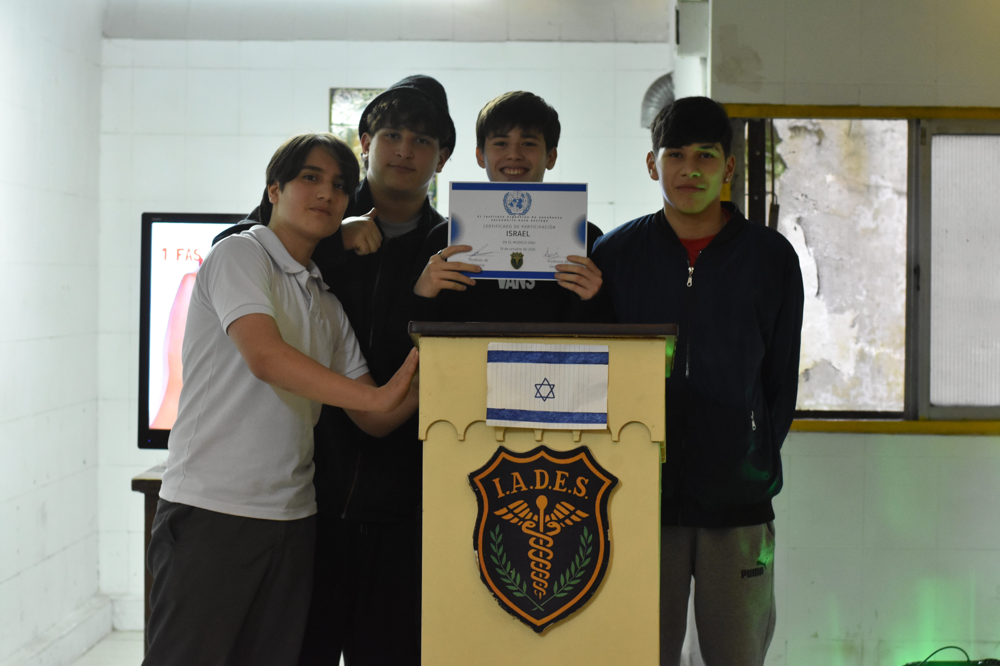
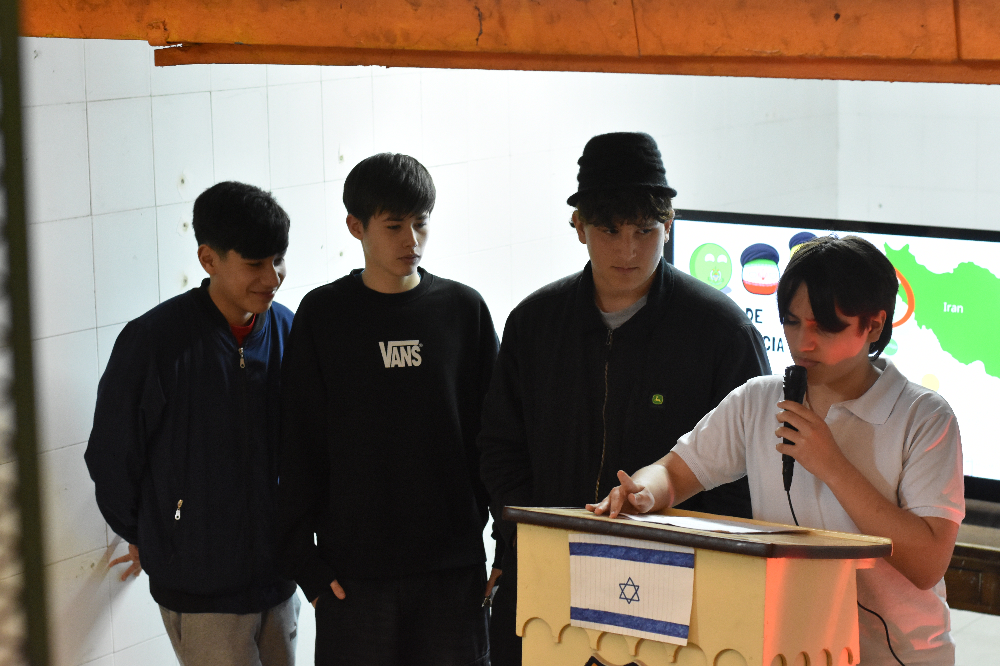
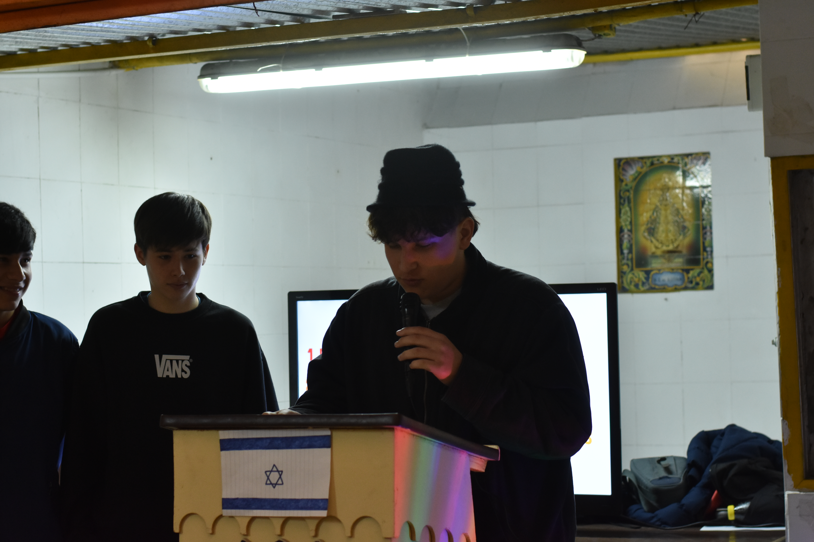

ISRAEL

Estudiantes: Cabrera Valentin, Cáceres Facundo, Deparsia Enzo y Ojeda Thiago
Honorables delegaciones y miembros de este consejo, la delegación de Israel se presenta hoy ante esta asamblea para refutar categóricamente las acusaciones e infundios vertidos contra nuestro Estado, y para reafirmar nuestro derecho inalienable a la soberanía y a la protección de nuestro pueblo. El Estado de Israel fundamenta su existencia en el derecho internacional y la autodeterminación, consolidándose como una democracia plena donde las minorías —incluyendo un 20% de población árabe— gozan de total igualdad de derechos e integración institucional.
A la par de este desafío de seguridad, su historial demuestra una inquebrantable voluntad de paz: desde la aceptación de múltiples propuestas de dos Estados y la retirada unilateral de Gaza en 2005, hasta los históricos Acuerdos de Abraham, evidenciando su constante búsqueda de una convivencia pacífica y segura. El Estado de Israel no solo es una realidad histórica indiscutible, sino un sujeto de derecho internacional cuya soberanía emana de la propia legitimidad de la Organización de las Naciones Unidas, la cual mediante la Resolución 181 de la Asamblea General respaldó la creación de un Estado judío y garantizó su posterior ingreso a la ONU como miembro de pleno derecho en 1949.

En ejercicio inalienable del principio de autodeterminación protegido por la Carta de la ONU, el pueblo judío consolidó una democracia representativa e incluyente en su patria ancestral, donde el 20% de la población es de origen árabe con plenos derechos civiles, representación parlamentaria en la Knesset y cargos en la Corte Suprema. Frente a intentos de deslegitimación exterior, es indispensable precisar que la crítica a políticas gubernamentales coyunturales —dinámica cotidiana e inherentemente democrática dentro de la sociedad israelí— jamás puede utilizarse para cuestionar el derecho a la existencia misma de una nación soberana.
A lo largo de la historia, la postura de Israel frente a la cuestión palestina ha sido la del compromiso y la búsqueda incesante de la paz, encontrando en la contraparte una constante negativa estratégica. La transformación del territorio evacuado en un bastión de operaciones terroristas por parte de las autoridades locales palestinas demuestra que la raíz del conflicto no radica en disputas territoriales negociables, sino en la negativa de sus liderazgos a reconocer la existencia de un Estado judío.

Cada vez que pensamos en Israel, entendemos que su historia no puede separarse de la necesidad de tener un lugar donde el pueblo judío pueda vivir, desarrollarse y sentirse seguro. Después de siglos de persecuciones y de una historia marcada por el sufrimiento, la creación y la existencia de Israel representan para muchos judíos mucho más que la existencia de un Estado: representan un hogar y la posibilidad de proteger su propia identidad.
Por eso, consideramos que Israel tiene razones para defender su existencia y la seguridad de sus ciudadanos. Un país no debería tener que vivir con miedo de que su población sea atacada, y defenderse puede ser entendido como una responsabilidad hacia quienes viven dentro de sus fronteras. Reflexionando sobre esto, también pensamos que la historia demuestra lo importante que es que un pueblo pueda sentirse seguro en su propia tierra. Para Israel, defenderse no es solamente una cuestión política o militar, sino también una cuestión de supervivencia, identidad y memoria. Muchas gracias.